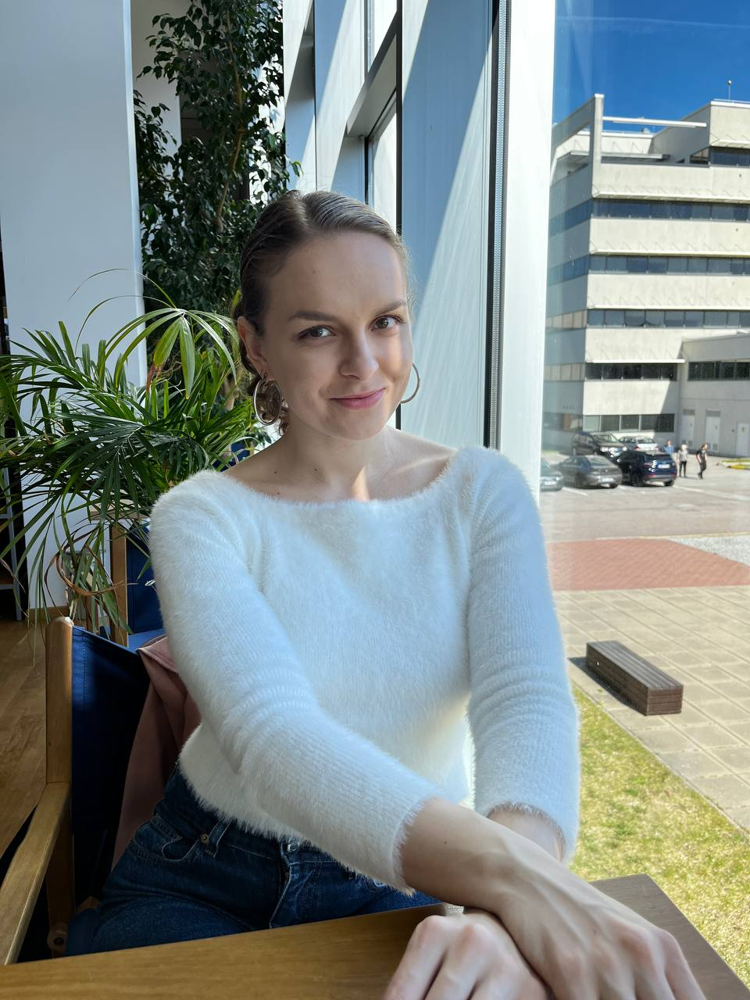

Hello, I’m Kat! I am currently a PhD student in the Logic and Semantics Group at Tallinn University of Technology under the supervision of Margus Veanes, Hendrik Maarand and Hellis Tamm. My main research interests are in automata theory and formal methods.
Check out my published works.
🎓 Education
2019-2022.
Master’s @ 🇪🇪 Tallinn University of Technology & University of Tartu.
September 2022-now.
PhD @ 🇪🇪 Tallinn University of Technology.
💌 Contact details
ekaterina [dot] zhuchko [at] taltech [dot] ee